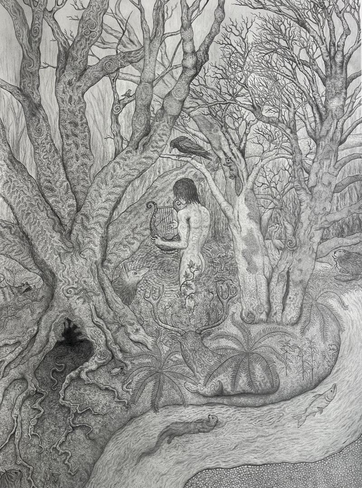

How myths shape what we call sacred and remember. Art, poetry and essays from forty contributors.
Under the eaves the old nest waits,
mud and grass and a year of weather.
Nothing promised. Then one morning
the whole sky leans toward us, singing.
